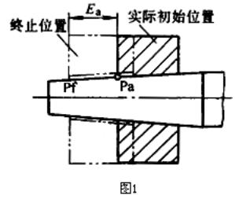
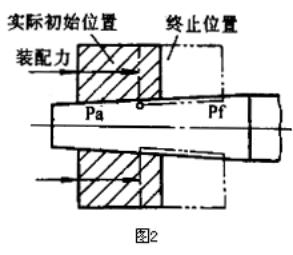
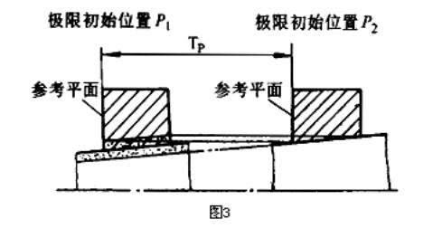
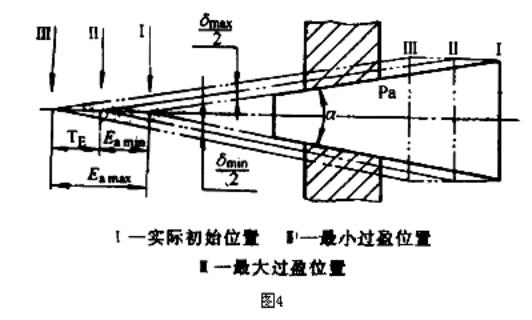

|
序号 |
术语 |
定 义 |
|
1 |
圆锥配合 |
基本圆锥相同的内、外圆锥直径之间由于结合不同所形成的相互关系 对于结构型圆锥配合，由内、外圆锥直径公差决定，对于位移型圆锥配合，由内、外圆锥相对轴向位移（Ea）决定 |
|
2 |
圆锥直径配合公差TDP |
圆锥配合在配合的直径上允许的间隙或过盈的变动量 对于结构型圆锥配合 间隙配合：TDP=Smax－Smin 过盈配合：TDP
=δmax-δmin 过渡配合：TDP
=Smax＋δmax 所有配合：TDP
=Tdi＋TDe 对于位移型圆锥配合 间隙配合:
TDP =Smax－Smin 过盈配合:
TDP =δmax－δmin 所有配合:
TDP ＋C×TE
式中 Smax �pSmin――最大、最小间隙量 δmax�pδmin――最大、最小过盈量 TDi、TDe――内、外圆锥直径公差 C、TE――锥度、轴向位移公差 |
|
3 |
位移型圆锥配合的初始位置P |
在不施加力的情况下，相互结合的内、外圆锥表面接触时的轴向位置 |
|
4 |
位移型圆锥配合的极限初始位置P1、P2 |
初始位置允许的界限 Pl为内圆锥最小极限圆锥与外圆锥最大极限圆锥的接触位置；P2为内圆锥最大极限圆锥与外圆锥最小极限圆锥的接触位置，见图3 |
|
5 |
位移型圆锥配合的初始位置公差Tp |
初始位置的变动量 Tp=（TDi+TDs） |
|
6 |
位移型圆锥配合的实际初始位置Pa |
相互结合的内、外实际圆锥的初始位置（见图1及图2），它应位于Pl和P2之间 |
|
7 |
位移型圆锥配合的终止位置Pf |
相互结构的内、外圆锥，为使其终止状态得到要求的间隙或过盈，所规定的相互轴向位置，见图1及图2 |
|
8 |
位移型圆锥配合的装配力Fs |
相互结合的内、外圆锥，为在终止位置（Pf）得到要求的过盈所施加的轴向力（图2） |
|
9 |
位移型圆锥配合的轴向位移E。 |
相互结合的内、外圆锥，从实际初始位置（Pa）到终止位置（Pf）移动的距离（图1） |
|
10 |
位移型圆锥配合的最小轴向位移Eamin |
在相互结合的内、外圆锥的终止位置上，得到最小间隙或最小过盈的轴向位移（图4） |
|
11 |
位移型圆锥配合的最大轴向位移Eamax |
在相互结合的内、外圆锥的终止位置上，得到最大问隙或最大过盈的轴向位移（图4） |
|
12 |
位移型圆锥配合的轴向位移公差TE |
轴向位移允许的变动量 TE=Eamax-Eamin |



